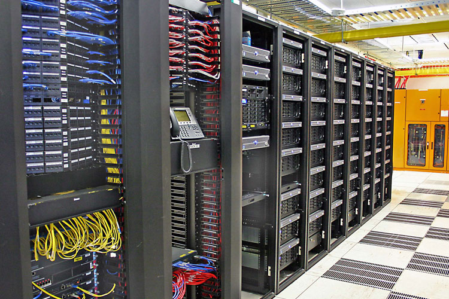

- Migracion de servidores HP:
Se llevo a cabo una migracion de servidores HP que tenian una version de windows server desactualizada. Esta migracion se hizo fuera de horario en una ventana de mantenimiento porque afectaba la producción

-
Se instaló equipamiento para la empresa Realtek que necesitaba tener interconexion con todo el edificio
